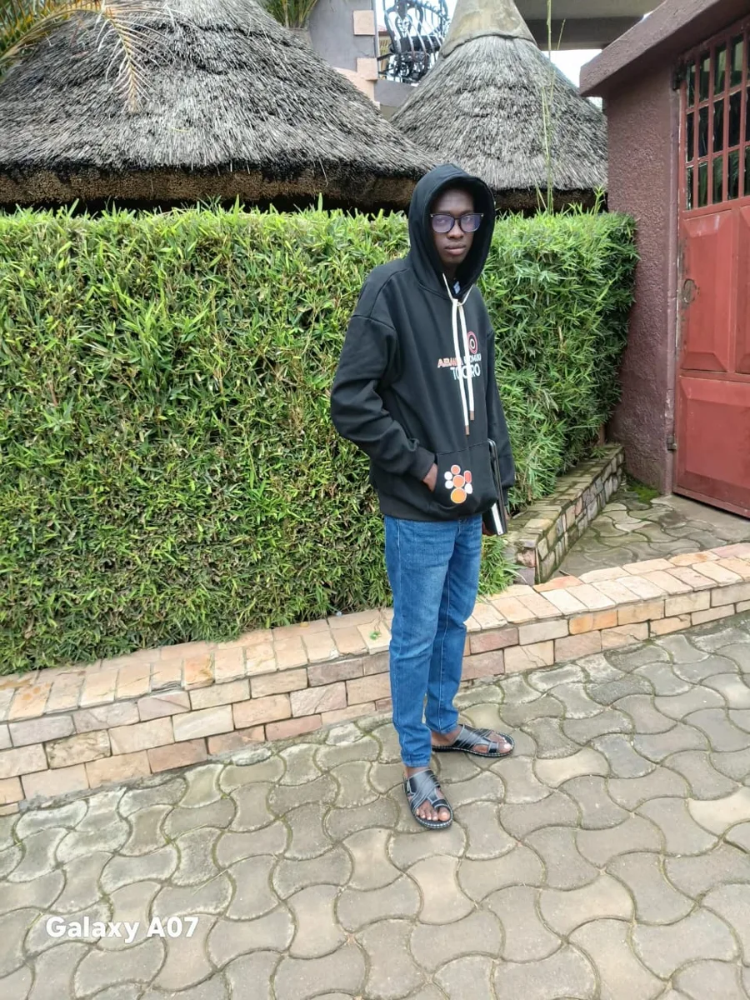

Integrity
My word is the product. If I promise it, I deliver it, even when it costs me.
KYENJOJO, UGANDA
A young social entrepreneur from western Uganda. Founder of DeryCode Technologies, CEO of Sageco Evergreen. Two companies, one purpose: to change people's lives and turn that change into mass social impact.
Twenty years old. Still finishing school in Kyenjojo. Running two companies in the hours school leaves me, and telling you that plainly because it is the constraint I actually build under.
FOUNDER · DERYCODE TECHNOLOGIES | CEO · SAGECO EVERGREEN

01 / CHARACTER
Before the titles, this is what I hold myself to. Business changes; character is what stays.
I'd rather be trusted than impressive. I want to be the person who tells you the truth about your project, keeps his word about a deadline, and is still standing there when things go wrong.
My word is the product. If I promise it, I deliver it, even when it costs me.
Success that leaves people behind isn't success. Impact is measured in lives changed, not numbers raised.
Start where the need is greatest, not where it's easiest to look good.
I ask why before how, and I stay a student even as I lead.
I'm building things that should outlast me. That means choosing the slow, honest path.
Open doors behind me. Every chance I get, I want to pull someone else up.
02 / MISSION
I didn't start a company because I wanted a company. I started because I kept meeting people working hard inside broken systems.
Families paying too much for software they can't use. Buyers who can't verify land before they hand over savings. Shop owners keeping stock in their heads. Students with no record of what they've learned.
So I build tools that work where people actually are: offline when the internet is down, priced for small businesses, and supported long after launch. And I lead companies that treat people as the point, not the by-product.
One life improved is a story. Millions is a generation changed. My mission is the millions.
03 / VISION
My long-term ambition is to work as an investor on the world stage, backing the people who build.
I want to earn my way to that table: build companies that actually make money and actually help people, learn how capital flows, then put that capital behind African founders solving African problems. Patient money, trusted partnerships, deals done on transparency.
I want to be the investor I needed when I was starting out. Vision 2040 is a direction, not a claim: a commitment to keep learning, keep building and keep lifting others as I grow.
04 / WHAT I LEAD
I'm not an observer of my own businesses. I'm in the work, most days.
Software for Ugandan businesses that has to survive real conditions: weak internet, small budgets, no IT department. Offline-first systems and websites, built and supported by the person who wrote the code.
derycode.online ↗ CEOA property platform built to stop the fear in buying land: verified listings, GPS boundaries, escrow-protected payments and eco-smart development. Proof that technology can protect ordinary people's savings.
sageco evergreen ↗Also building Voice IDE, an editor you can code in by talking, plus other experiments on GitHub.
05 / FOR INVESTORS
I'm opening DeryCode Technologies and Sageco Evergreen to angel and strategic investors who want commercial returns and measurable social impact in the same deal.
Both companies are early stage and already operating, not ideas on paper. If you invest in African founders who ship, I'd like to talk.
Recurring revenue from businesses that depend on us: custom systems, hosting and support. 61 live products, a proven delivery model and low overheads mean every new client compounds.
Capital would fund: a small delivery team so I stop being the bottleneck, and sales into Kampala's SME market.
Verified listings, GPS boundaries, escrow-protected payments and eco-smart development. Paid viewings through MTN MoMo, Airtel Money, cards and PesaPal are already generating revenue.
Capital would fund: expansion into more districts, broker onboarding and escrow partnerships.
Patient capital and people who have built before. I'm more interested in a partner who helps us grow than in the biggest cheque.
Everything is verifiable: 62 public repositories on GitHub (plus 10 in progress), every site I claim is live and running.
Prefer a conversation first? Email me and I'll send the full numbers, traction and terms: derycode50@gmail.com
OFF THE RECORD
I don't put this in a pitch deck. Said out loud it sounds like ego, and I know exactly how it reads. So it stays here, one click away, for the person who wants to know what I am actually building toward.
It is not for the money as a thing to own. It is because capital is the only lever big enough for the problems I grew up inside: a school keeping marks in exercise books, a family handing over savings for land it can't verify, a shop whose stock exists only in someone's head. Ideas are cheap where I am from. Money that can be deployed patiently is not.
So the arithmetic is honest, and boring. No salary gets to thirteen figures. Ownership does. Companies that make real profit, kept and reinvested, then capital put behind other builders who are doing the same. Decades, not years. It may not happen. I build as if it will, and I refuse to say it is guaranteed.
One rule I am writing down while it is still cheap to write: if I ever talk about the number more than the work, hold me to this page.
06 / PHOTOS



07 / HELLO
Partners, investors, fellow founders, or anyone who wants to talk about doing good at scale, I'm listening.